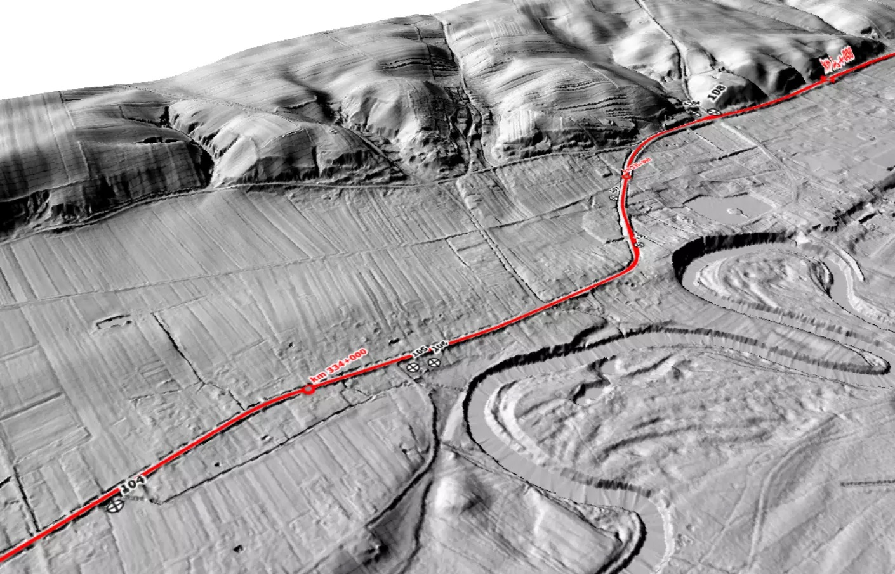

Geologia i Geotechnika
Badania podłoża grunowego
Przeprowadzamy geologiczne i geotechniczne badania gruntu, rozpoznajemy warunki gruntowo - wodne oraz określamy warunki posadowienia obiektów budowlanych. Badania wykonujemy na potrzeby wszelkich inwestycji zarówno kubaturowych, jak i liniowych.
Właściwy dobór technologii fundamentowania wymaga rzetelnego rozpoznania warunków gruntowych, które pozwala na właściwe zaprojektowanie posadowienia obiektu lub zastosowanie technologii wzmocnienia podłoża. Optymalne dobranie projektu do występujących w podłożu parametrów gwarantuje bezpieczeństwo inwestycji oraz pozwala znacząco obniżyć koszty.
Wykonujemy
Masz pytania? SKONTAKTUJ SIĘ- badania terenowe: geotechniczne i geologiczno-inżynierskie
- badania laboratoryjne gruntów
- raporty i dokumentacje wynikowe
- odbiory wykopów fundamentowych
- analizy stateczności skarp i zboczy
- oferujemy doradztwo i konsultacje z zakresu geologii inżynierskiej i geotechniki
Wyniki badań
przedstawiamy w formie
- Opinii Geotechnicznej
- Dokumentacji Badań Podłoża Gruntowego
- Projektu Geotechnicznego
- Raportów z badań
- Dokumentacji Geologiczno-Inżynierskiej na podstawie zatwierdzonego Projektu Robót Geologicznych
Domy jednorodzinne i wielorodzinne
Przy obsłudze klientów zapewniamy indywidualne podejście i doradztwo. Zaprojektujemy oraz wykonamy badania i sporządzimy niezbędne dokumentacje w zależności od rodzaju inwestycji i stwierdzonych warunków gruntowo-wodnych.
Oferujemy:
- badania pod budowę między innymi: domów jednorodzinnych i wielorodzinnych oraz na potrzeby przydomowych oczyszczalni ścieków
- badania i doradztwo przed zakupem nieruchomości
- wykonanie Opinii Geotechnicznej niezbędnej przy sporządzaniu Projektu Budowlanego, a w razie konieczności i inne niezbędne dokumentacje geotechniczne lub dokumentację geologiczno-inżynierską.
Geofizyka
W ramach usług geologicznych wykonujemy również badania geofizyczne stanowiące bezinwazyjne badanie ośrodka gruntowego. W ramach badań geofizycznych oferujemy między innymi:
- sondowania elektrooporowe SGE
- tomografię elektrooporową ERT
- badanie georadarem GPR
- sejsmikę refrakcyjna i refleksyjną